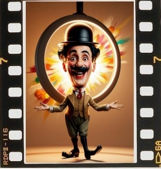

"El caballo en movimiento",
Eadweard Muybridge (1878)
Bienvenidos
¡¡¡Bienvenidos al Cine como Patrimonio!!!
Historia del Cine
Definición de Cine
El CINE es una forma de arte y entretenimiento que utiliza la proyección de imágenes en movimiento para contar historias, transmitir ideas y emociones.
La historia del cine es fascinante y abarca más de un siglo de innovaciones tecnológicas, artísticas y culturales.
Cuando se habla del nacimiento del cine se toma como referencia la fecha del 28 de diciembre de 1895, en la que se proyectaron al público las primeras películas realizadas por los hermanos Auguste y Louis Lumière, en la memorable sesión realizada en el Salón Indio del Gran Café de París.
Definición: El cine, también conocido como cinematografía, es la técnica y el arte de crear y proyectar películas. Se basa en la captura y reproducción de imágenes en movimiento, lo que genera la ilusión de movimiento continuo
- Elementos del Cine
- Técnica: Incluye la grabación de fotogramas a una velocidad que el ojo humano percibe como movimiento continuo. Las películas suelen grabarse a 24 fotogramas por segundo2.
- Narrativa: El cine es una forma de narrar historias visualmente, combinando elementos como el guion, la dirección, la actuación, la fotografía y el montaje2.
Orígenes del Cine
La industria del cine tiene sus orígenes en varios lugares que contribuyeron significativamente a su desarrollo.
- Europa: Fue el epicentro del nacimiento del cine.
- Francia:
- Los hermanos Lumière inventaron el cinematógrafo en 1895 en Lyon, que se considera como el nacimiento del cine, muy a menudo.
- Realizaron la primera proyección pública de cine el 28 de diciembre de 1895 en París, en el Salón Indio del Gran Café de París.
- Georges Méliès estableció el primer estudio de cine en Montreuil, cerca de París, en1896 y fue el pionero de los efectos especiales.
- Reino Unido:
- Los primeros estudios de cine británicos se establecieron en Londres alrededor de 1899.
- Robert W. Paul y Birt Acres realizaron importantes avances en Inglaterra
- Alemania:
- El estudio Babelsberg, el más antiguo del mundo a gran escala, se fundó en 1912 cerca de Berlín.
- Los hermanos Skladanowsky en Alemania presentaron su "Bioskop" en 1895.
- Max y Emil Skladanowsky hicieron la primera proyección pública en Berlín.
- América: Rápidamente, Estados Unidos tomó el liderazgo, especialmente con el establecimiento de Hollywood, aunque Brasil y México también tuvieron desarrollos tempranos.
- Estados Unidos:
- Thomas Edison y su asistente William Dickson desarrollaron el Kinetoscopio en 1890.
- Hollywood, California, emergió como centro de la industria cinematográfica a partir de 1911, cuando se crea el primer estudio.
- Brasil:
- 1896: Primera exhibición cinematográfica en Río de Janeiro.
- 1897: Afonso Segreto filma la primera película brasileña.
- México:
- 1896: Primera proyección cinematográfica en la Ciudad de México.
- 1897: Salvador Toscano Barragán realiza las primeras filmaciones mexicanas.
- Asia: India y Japón fueron pioneros, con desarrollos significativos en los primeros años del siglo XX.
- India:
- La primera película india se proyectó en 1896, y Bombay se convirtió en el centro de la industria cinematográfica india.
- Dadasaheb Phalke, el "Padre del cine indio", dirigió el primer largometraje mudo de India "Raja Harishchandra" (1913).
- Harischandra Sakharam Bhatavdekar filmó "The Wrestlers" (1899) que se considera la primera película india rodada por un cineasta indio.
- Japón:
- Shirō Asano importó el primer proyector cinematográfico a Japón en 1896. Las primeras proyecciones públicas de películas en Japón tuvieron lugar entre 1896-1897.
- Shōzō Makino, el "Padre del cine japonés", fundó el primer estudio de cine permanente en Japón en 1908.
- China:
- 1896: Primera proyección cinematográfica en Shanghái.
- 1905: Ren Qingtai dirige "Dingjun Mountain", considerada la primera película china.
- África: Junto a Oceanía vieron sus primeras proyecciones casi al mismo tiempo que el resto del mundo, pero el desarrollo de industrias cinematográficas locales fue más gradual.
- Egipto:
- 1896: Primera proyección cinematográfica en Alejandría.
- 1907: Se produce la primera película egipcia.
- Sudáfrica:
- 1895: Primera proyección cinematográfica en Johannesburgo.
- 1910: Se produce "The Great Kimberley Diamond Robbery", una de las primeras películas sudafricanas.
- Oceanía: En casi todos los continentes: primero llegaron las proyecciones de películas extranjeras, seguidas por las primeras producciones locales.
- Australia:
- 1896: Primera proyección cinematográfica en Sydney.
- 1906: "The Story of the Kelly Gang" considerado el primer largometraje narrativo del mundo.
- Nueva Zelanda:
- 1896: Primera proyección cinematográfica en Auckland.
- 1898: Se filman las primeras imágenes en movimiento de Nueva Zelanda.
Aspectos técnicos
El significado del patrimonio audiovisual: es una afirmación de nuestra memoria colectiva y una valiosa fuente de conocimiento, ya que reflejan la diversidad cultural, social y lingüística de nuestras comunidades.
Inicios del Cine


Chaplin, siempre Chaplin


Galería Archivo

Noticias
Wim Wenders recibe el premio FIAF 2024 en el Maratón de Cine Clásico de Budapest
La FIAF entregó su Premio FIAF 2024 al aclamado cineasta alemán Wim Wenders durante una ceremonia especial en Budapest, Hungría, como parte de la 7ª edición del Maratón de Cine Clásico de Budapest. Leer más
Día Mundial del Patrimonio Audiovisual 2024
Cada 27 de octubre, los archivos audiovisuales de todo el mundo conmemoran el Día Mundial del Patrimonio Audiovisual para celebrar la labor de los archivos y, concienciar sobre la importancia... Leer más
Patrimonio Cultural
El cine es una forma de transmisión de la cultura universal de todos los tiempos. Nuestra sociedad se va formando e informando a través del cine y las películas, reportajes o documentales, que permiten otro tipo de acercamiento.
-
Internet Archive es el sitio ideal para disfrutar de 5000 películas de dominio público de forma totalmente gratuita (y legal, no lo olvides).
-
Cine Clásico: las joyas del cine en blanco y negro y los grandes clásicos del Séptimo Arte, se pueden encontrar una buena parte de estas películas.
-
De Dominio Público: más de 500 películas pertenecientes al Dominio Público u ofrecidas a través de sus canales oficiales, para ver online, en versiones originales, subtituladas y en español.